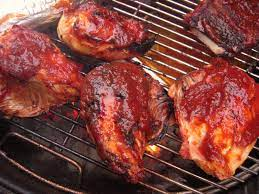

Grilled Barbeque Chicken Recipe

Description
Barbeque chicken is a delicious main item to cook on any summer day! Paired with corn on the cob,
I make this all the time, througout the Spring and Summer seasons, when it's warm outside.
Ingredients
Barbeque sauce of choice (I'm using Stubbs)
Steps
Marinade chicken breast in barbeque sauce from 30 minutes to 1 hour.
Heat the grill on high to 450 farenheit.
Place chicken breast on heated grill and let cook for 6 minutes.
Flip over chicken breast and cook for an additional 6 minutes.
I hope you enjoy this quick and easy, yet super yummy meal!